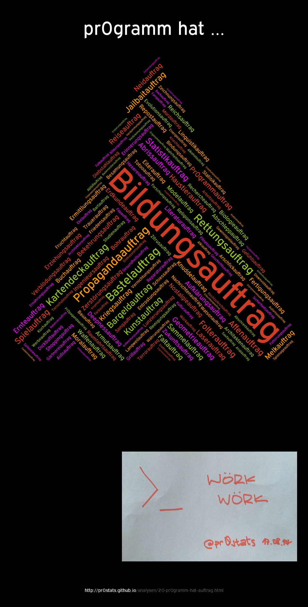

pr0gramm hat Auftrag
auf pr0gramm

Methodik
- Datengewinnung gemäß Methodik (Stichtag 17.08.2014, 18:51 Uhr)
- Zeitraum
01/2007 bis 17/08/2014
- Alle Tags mit
pr0gramm hat *auftrag, z.T. bereinigt/vereinheitlicht (z.B. Entfernung von Sonderzeichen)
- Erstellung der Tagcloud mittels Tagul